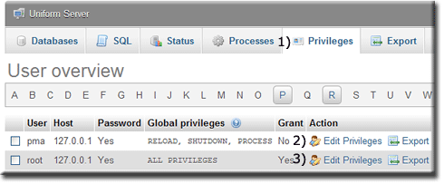
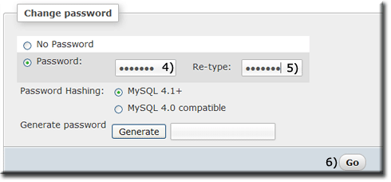

|
|
MySQL - Change password |
There are three methods of changing the MySQL root password: by UniController, phpMyAdmin or MySQL Prompt. The easiest method is to use UniController, which is fully automated. Other methods require a certain amount of typing and editing, and are more error-prone.
Set New MySQL root user password using UniController
Starting UniController provides the first opportunity to change the current root password, it is highly recommended that you set this password at the first opportunity.
Alternatively you can skip setting a new MySQL root password and run this menu option later using:
MySQL > Change MySQL root password
Note: Clicking the cancel button no action is taken. You can set the password later. |

|
Set New MySQL root user password using phpMyAdmin
Setting a new MySQL root password using phpMyAdmin requires two root accounts to be changed along with one configuration file.
Note: The following assumes the current password is root12 and the new password is root123; substitute for these as appropriate.
First start both servers using UniController and then start phpMyAdmin. To change the password proceed as follows:
Note: Do not stop the MySQL server at this point. |
 |
Note: Perform a quick test. Clear your browser's cache and restart the servers. Run phpMyAdmin and verify that the MySQL server is accessible. |
 |
Note: The above root user accounts all use the same root password. This is purely for convenience and one of consistency.
Set New MySQL root user password using MySQL Prompt
Setting a new MySQL root password using MySQL Prompt requires two root accounts to be changed along with one configuration file.
Note: The following assumes the current password is root123 and the new password is root1234; substitute for these as appropriate.
|
First start both servers using UniController and proceed as follows:
Note: Perform a quick test. Clear your browser's cache and restart the servers. Run phpMyAdmin and verify that the MySQL server is accessible. |
Welcome to the MySQL monitor. Commands end with ; or \g.
Your MySQL connection id is 1
Server version: 5.5.30 MySQL Community Server (GPL)
Copyright (c) 2000, 2013, Oracle and/or its affiliates.
All rights reserved.
Oracle is a registered trademark of Oracle Corporation
and/or its affiliates. Other names may be trademarks of
their respective owners.
Type 'help;' or '\h' for help. Type '\c' to clear the
current input statement.
mysql> SET PASSWORD FOR 'root'@'127.0.0.1' = PASSWORD('root1234');
Query OK, 0 rows affected (0.11 sec)
mysql> SET PASSWORD FOR 'pma'@'127.0.0.1' = PASSWORD('root1234');
Query OK, 0 rows affected (0.00 sec)
mysql> FLUSH PRIVILEGES;
Query OK, 0 rows affected (0.44 sec)
mysql> exit
Bye
C:\UniServerZ\core\mysql\bin>
|